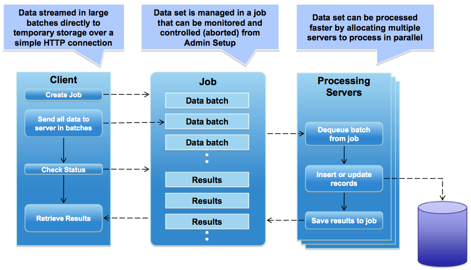
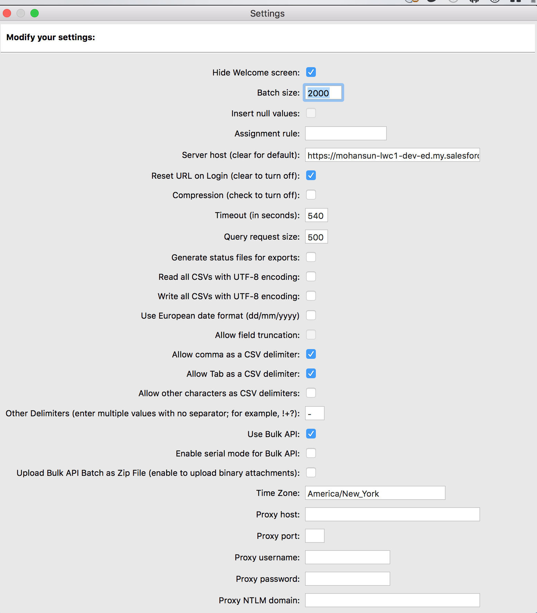
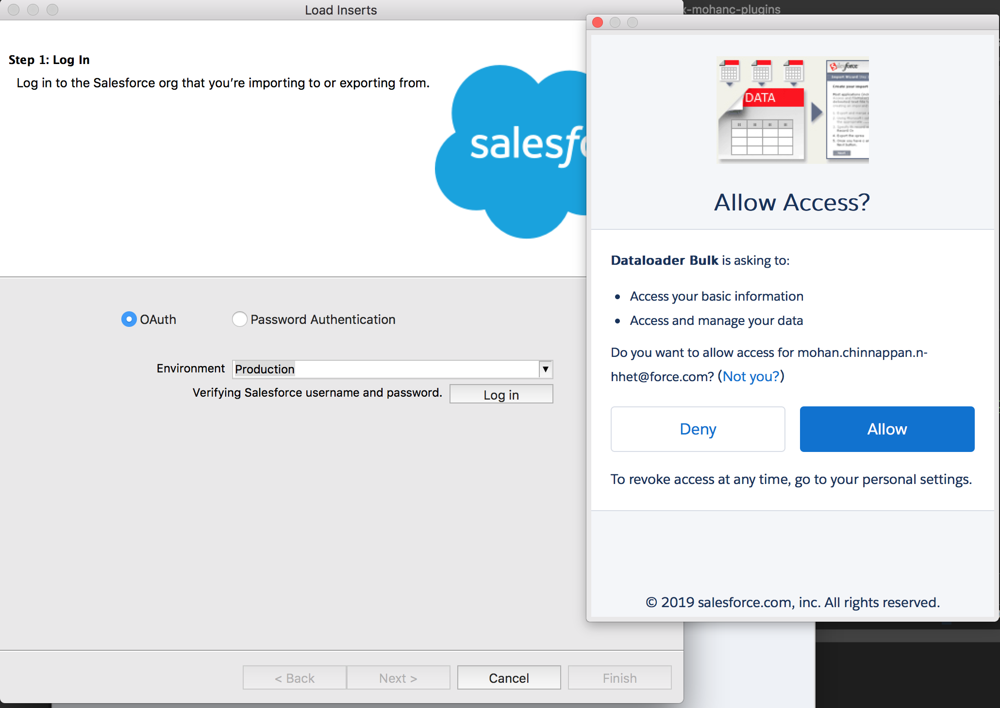
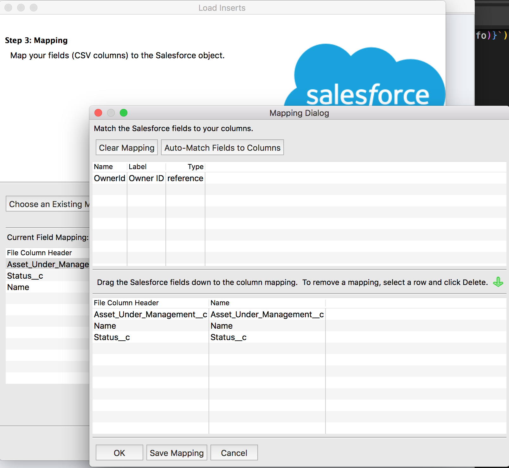
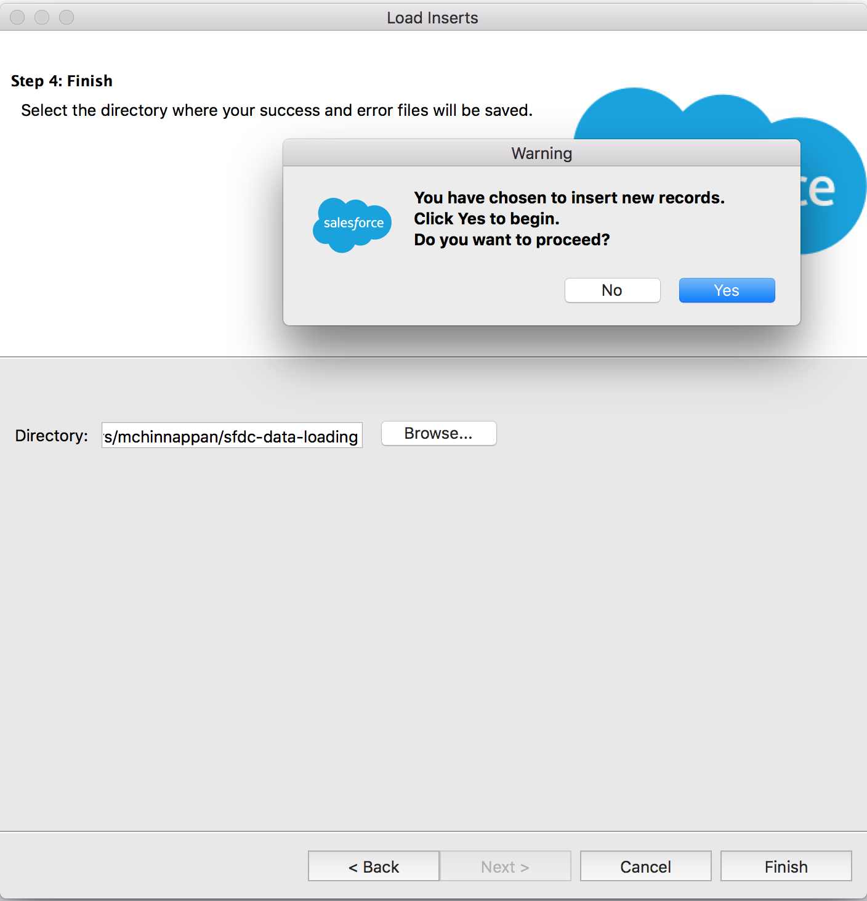
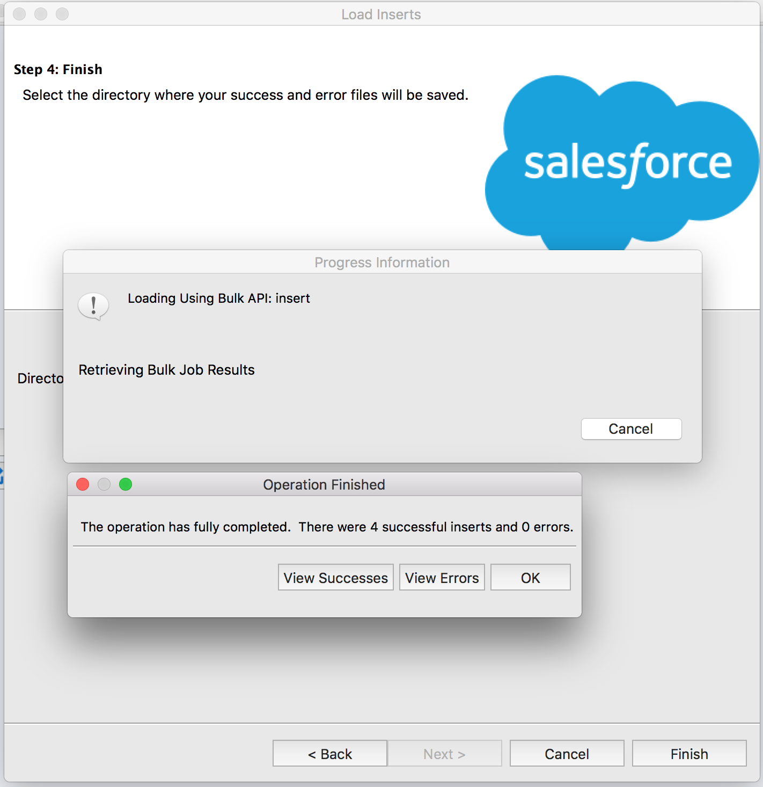
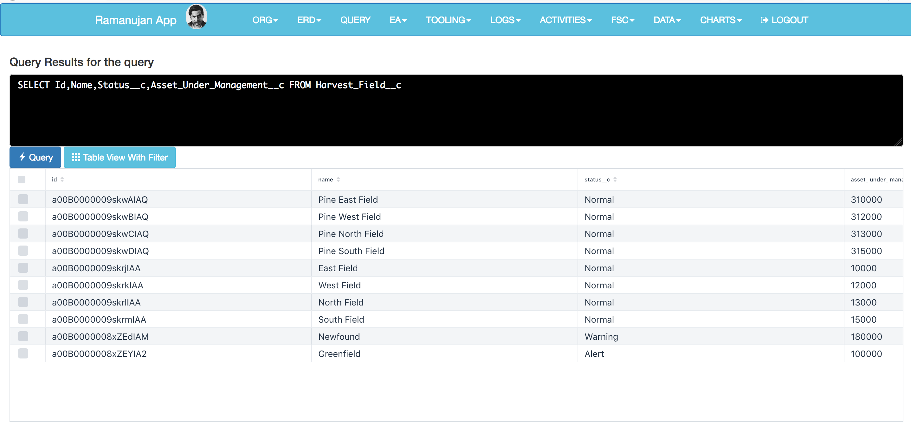
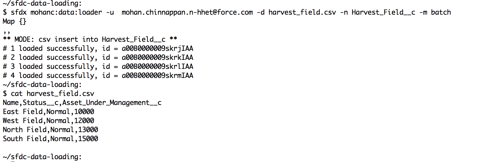

Large Data Volume
-
Using Bulk API
The Bulk API developed specifically to simplify the process of uploading large amounts of data. It is optimized for inserting, updating, upserting, and deleting large numbers of records asynchronously by submitting them in batches to Force.com, to be processed in the background.
Uploaded records are streamed to Force.com to create a new job. As the data rolls in for the job it is stored in temporary storage and then sliced up into user-defined batches. Even while your data is still being sent to the server, the Force.com platform submits the batches for processing.
Batch sizes should be adjusted based on processing times. Start with 5000 records and adjust the batch size based on processing time. If it takes more than five minutes to process a batch, it may be beneficial to reduce the batch size. If it takes a few seconds, the batch size should be increased. If you get a timeout error when processing a batch, split your batch into smaller batches, and try again.Batches can be processed in parallel or serially depending upon your needs. The Bulk API moves the functionality and work from your client application to the server. The API logs the status of each job and tries to reprocess failed records for you automatically.
Salesforce provides an additional API, Bulk API 2.0, which uses the REST API framework to provide similar capabilities to Bulk API. Use Bulk API 2.0 instead of Bulk API if you want a simplified process for inserting, updating, upserting, or deleting large sets of data. Bulk API 2.0 does not currently support query or queryAll
-
- Create a new job that specifies the object and action.
- Send data to the server in a number of batches.
- Once all data has been submitted, close the job. Once closed, no more batches can be sent as part of the job.
- Check status of all batches at a reasonable interval. Each status check returns the state of each batch.
- When all batches have either completed or failed, retrieve the result for each batch.
- Match the result sets with the original data set to determine which records failed and succeeded, and take appropriate action
- At any point in this process, you can abort the job. Aborting a job has the effect of preventing any unprocessed batches from being processed. It doesn't undo the effects of batches already processed.
-
To configure Data Loader to use the Bulk API for inserting, updating, upserting, deleting, and hard deleting records:
Open the Data Loader. Choose Settings | Settings. Select the Use Bulk API option. Click OK.
Folder content $ tree . ├── error022019081012672.csv ├── fieldMap.sdl ├── harvest_field-2.csv ├── harvest_field.csv └── success022019081012672.csv 0 directories, 5 files $ cat fieldMap.sdl #Mapping values #Wed Feb 20 20:09:30 EST 2019 Name=Name Asset_Under_Management__c=Asset_Under_Management__c Status__c=Status__c
Using Data Loader Configured to use Bulk API







$ cat success022019081012672.csv "ID","NAME","STATUS__C","ASSET_UNDER_MANAGEMENT__C","STATUS" "a00B0000009skwAIAQ","Pine East Field","Normal","310000","Item Created" "a00B0000009skwBIAQ","Pine West Field","Normal","312000","Item Created" "a00B0000009skwCIAQ","Pine North Field","Normal","313000","Item Created" "a00B0000009skwDIAQ","Pine South Field","Normal","315000","Item Created" $ cat error022019081012672.csv "NAME","STATUS__C","ASSET_UNDER_MANAGEMENT__C","ERROR"
Using SFDX Plugin to use Bulk API


Event Based Data Sync
Well suited for near-real time data sync with external systems

Platform Events
Foreign Data Wrapper (FDW) and SQL/MED
Bulk API Developer Guide -